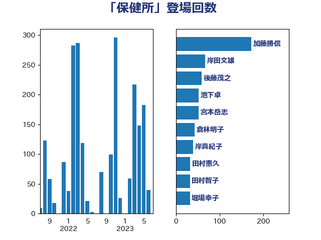

単語「保健所」

| 加藤勝信 | 自由民主党 | 172 回 |
| 岸田文雄 | 自由民主党 | 67 回 |
| 後藤茂之 | 自由民主党 | 59 回 |
| 池下卓 | 日本維新の会 | 52 回 |
| 宮本岳志 | 日本共産党 | 52 回 |
| 倉林明子 | 日本共産党 | 43 回 |
| 岸真紀子 | 立憲民主党 | 40 回 |
| 田村憲久 | 自由民主党 | 33 回 |
| 田村智子 | 日本共産党 | 32 回 |
| 堀場幸子 | 日本維新の会 | 32 回 |
| 打越さく良 | 立憲民主党 | 30 回 |
| 西村康稔 | 自由民主党 | 26 回 |
| 本田顕子 | 自由民主党 | 26 回 |
| 宮本徹 | 日本共産党 | 26 回 |
| 金子恭之 | 自由民主党 | 24 回 |
| 芳賀道也 | 国民民主党 | 24 回 |
| 田中健 | 国民民主党 | 24 回 |
| 羽生田俊 | 自由民主党 | 22 回 |
| 石川香織 | 立憲民主党 | 22 回 |
| 中島克仁 | 立憲民主党 | 21 回 |
| 水岡俊一 | 立憲民主党 | 19 回 |
| 梅村聡 | 日本維新の会 | 19 回 |
| 東徹 | 日本維新の会 | 19 回 |
| 山際大志郎 | 自由民主党 | 19 回 |
| 大島九州男 | れいわ新選組 | 17 回 |
| 伊佐進一 | 公明党 | 16 回 |
| 野間健 | 立憲民主党 | 15 回 |
| 谷川とむ | 自由民主党 | 15 回 |
| 山本香苗 | 公明党 | 15 回 |
| 小池晃 | 日本共産党 | 15 回 |
| 高木かおり | 日本維新の会 | 14 回 |
| 吉良よし子 | 日本共産党 | 14 回 |
| 西村智奈美 | 立憲民主党 | 13 回 |
| 大石あきこ | れいわ新選組 | 13 回 |
| 阿部知子 | 立憲民主党 | 12 回 |
| 早稲田ゆき | 立憲民主党 | 12 回 |
| 重徳和彦 | 立憲民主党 | 11 回 |
| 島村大 | 自由民主党 | 11 回 |
| 伊東信久 | 日本維新の会 | 11 回 |
| 長谷川淳二 | 自由民主党 | 10 回 |
| 石井苗子 | 日本維新の会 | 10 回 |
| 田村まみ | 国民民主党 | 10 回 |
| 末松信介 | 自由民主党 | 10 回 |
| 山井和則 | 立憲民主党 | 10 回 |
| 仁木博文 | 無所属 | 10 回 |
| 井上哲士 | 日本共産党 | 10 回 |
| 上月良祐 | 自由民主党 | 10 回 |
| 緒方林太郎 | 無所属 | 9 回 |
| 紙智子 | 日本共産党 | 9 回 |
| 斎藤アレックス | 国民民主党 | 9 回 |
| 友納理緒 | 自由民主党 | 9 回 |
| 佐藤英道 | 公明党 | 9 回 |
| 伊藤岳 | 日本共産党 | 9 回 |
| 井坂信彦 | 立憲民主党 | 9 回 |
| 中司宏 | 日本維新の会 | 9 回 |
| 石田昌宏 | 自由民主党 | 8 回 |
| 石垣のりこ | 立憲民主党 | 8 回 |
| 田畑裕明 | 自由民主党 | 8 回 |
| 生稲晃子 | 自由民主党 | 8 回 |
| 宮路拓馬 | 自由民主党 | 8 回 |
| 伊波洋一 | 無所属 | 8 回 |
| こやり隆史 | 自由民主党 | 8 回 |
| 阿部司 | 日本維新の会 | 7 回 |
| 浜地雅一 | 公明党 | 7 回 |
| 柳本顕 | 自由民主党 | 7 回 |
| 山添拓 | 日本共産党 | 7 回 |
| 塩川鉄也 | 日本共産党 | 7 回 |
| 西岡秀子 | 国民民主党 | 6 回 |
| 福重隆浩 | 公明党 | 6 回 |
| 石井啓一 | 公明党 | 6 回 |
| 漆間譲司 | 日本維新の会 | 6 回 |
| 水野素子 | 立憲民主党 | 6 回 |
| 山田勝彦 | 立憲民主党 | 6 回 |
| 山本博司 | 公明党 | 6 回 |
| 森山浩行 | 立憲民主党 | 5 回 |
| 星北斗 | 自由民主党 | 5 回 |
| 川田龍平 | 立憲民主党 | 5 回 |
| 寺田学 | 立憲民主党 | 5 回 |
| 古屋範子 | 公明党 | 5 回 |
| 井原巧 | 自由民主党 | 5 回 |
| 遠藤良太 | 日本維新の会 | 4 回 |
| 藤井一博 | 自由民主党 | 4 回 |
| 菅義偉 | 自由民主党 | 4 回 |
| 浜口誠 | 国民民主党 | 4 回 |
| 柚木道義 | 立憲民主党 | 4 回 |
| 岡本あき子 | 立憲民主党 | 4 回 |
| 尾身朝子 | 自由民主党 | 4 回 |
| 吉田統彦 | 立憲民主党 | 4 回 |
| 吉田久美子 | 公明党 | 4 回 |
| 吉田とも代 | 日本維新の会 | 4 回 |
| 一谷勇一郎 | 日本維新の会 | 4 回 |
| 高木真理 | 立憲民主党 | 3 回 |
| 馬場伸幸 | 日本維新の会 | 3 回 |
| 阿部弘樹 | 日本維新の会 | 3 回 |
| 長友慎治 | 国民民主党 | 3 回 |
| 遠藤敬 | 日本維新の会 | 3 回 |
| 菅家一郎 | 自由民主党 | 3 回 |
| 自見はなこ | 自由民主党 | 3 回 |
| 福島みずほ | 社会民主党 | 3 回 |
| 浅田均 | 日本維新の会 | 3 回 |
| 河西宏一 | 公明党 | 3 回 |
| 本村伸子 | 日本共産党 | 3 回 |
| 徳永エリ | 立憲民主党 | 3 回 |
| 岩谷良平 | 日本維新の会 | 3 回 |
| 山本太郎 | れいわ新選組 | 3 回 |
| 山岸一生 | 立憲民主党 | 3 回 |
| 大岡敏孝 | 自由民主党 | 3 回 |
| 吉田はるみ | 立憲民主党 | 3 回 |
| 高橋千鶴子 | 日本共産党 | 2 回 |
| 青柳陽一郎 | 立憲民主党 | 2 回 |
| 長妻昭 | 立憲民主党 | 2 回 |
| 金村龍那 | 日本維新の会 | 2 回 |
| 道下大樹 | 立憲民主党 | 2 回 |
| 角田秀穂 | 公明党 | 2 回 |
| 茂木敏充 | 自由民主党 | 2 回 |
| 竹谷とし子 | 公明党 | 2 回 |
| 石井章 | 日本維新の会 | 2 回 |
| 田島麻衣子 | 立憲民主党 | 2 回 |
| 熊谷裕人 | 立憲民主党 | 2 回 |
| 浦野靖人 | 日本維新の会 | 2 回 |
| 山田宏 | 自由民主党 | 2 回 |
| 小野田紀美 | 自由民主党 | 2 回 |
| 小西洋之 | 立憲民主党 | 2 回 |
| 小沼巧 | 立憲民主党 | 2 回 |
| 天畠大輔 | れいわ新選組 | 2 回 |
| 大西健介 | 立憲民主党 | 2 回 |
| 堀内詔子 | 自由民主党 | 2 回 |
| 国光あやの | 自由民主党 | 2 回 |
| 吉川沙織 | 立憲民主党 | 2 回 |
| 三浦信祐 | 公明党 | 2 回 |
| おおつき紅葉 | 立憲民主党 | 2 回 |
| 高階恵美子 | 自由民主党 | 1 回 |
| 音喜多駿 | 日本維新の会 | 1 回 |
| 青木愛 | 立憲民主党 | 1 回 |
| 鈴木義弘 | 国民民主党 | 1 回 |
| 鈴木敦 | 国民民主党 | 1 回 |
| 鈴木庸介 | 立憲民主党 | 1 回 |
| 野村哲郎 | 自由民主党 | 1 回 |
| 輿水恵一 | 公明党 | 1 回 |
| 赤嶺政賢 | 日本共産党 | 1 回 |
| 西田実仁 | 公明党 | 1 回 |
| 藤井比早之 | 自由民主党 | 1 回 |
| 蓮舫 | 立憲民主党 | 1 回 |
| 落合貴之 | 立憲民主党 | 1 回 |
| 舞立昇治 | 自由民主党 | 1 回 |
| 空本誠喜 | 日本維新の会 | 1 回 |
| 石原正敬 | 自由民主党 | 1 回 |
| 石原宏高 | 自由民主党 | 1 回 |
| 畦元将吾 | 自由民主党 | 1 回 |
| 玉木雄一郎 | 国民民主党 | 1 回 |
| 牧山ひろえ | 立憲民主党 | 1 回 |
| 片山大介 | 日本維新の会 | 1 回 |
| 源馬謙太郎 | 立憲民主党 | 1 回 |
| 清水貴之 | 日本維新の会 | 1 回 |
| 浅野哲 | 国民民主党 | 1 回 |
| 浅川義治 | 日本維新の会 | 1 回 |
| 河野太郎 | 自由民主党 | 1 回 |
| 武井俊輔 | 自由民主党 | 1 回 |
| 森屋隆 | 立憲民主党 | 1 回 |
| 森屋宏 | 自由民主党 | 1 回 |
| 根本幸典 | 自由民主党 | 1 回 |
| 柴田巧 | 日本維新の会 | 1 回 |
| 枝野幸男 | 立憲民主党 | 1 回 |
| 松野明美 | 日本維新の会 | 1 回 |
| 松野博一 | 自由民主党 | 1 回 |
| 松本剛明 | 自由民主党 | 1 回 |
| 杉尾秀哉 | 立憲民主党 | 1 回 |
| 志位和夫 | 日本共産党 | 1 回 |
| 山田太郎 | 自由民主党 | 1 回 |
| 小野泰輔 | 日本維新の会 | 1 回 |
| 小川淳也 | 立憲民主党 | 1 回 |
| 塩田博昭 | 公明党 | 1 回 |
| 塩村あやか | 立憲民主党 | 1 回 |
| 塩崎彰久 | 自由民主党 | 1 回 |
| 勝目康 | 自由民主党 | 1 回 |
| 佐々木紀 | 自由民主党 | 1 回 |
| 中野洋昌 | 公明党 | 1 回 |
| 上田清司 | 国民民主党 | 1 回 |